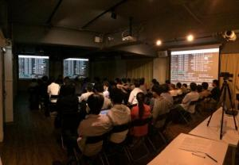
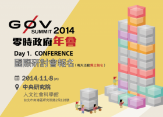
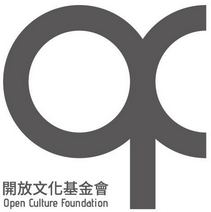

也紀念我們永遠的朋友 李士傑先生（Shih-Chieh Ilya Li）。
開放文化基金會成立，open-source 需要你的參與！
今年6月，由 clkao 發起（推坑）之下，開放文化基金會終於開張了！
從一開始，一股對開源、開放文化的熱忱討論，開啟了成立基金會契機，原以為是個好坑，沒想到又深又大…譬如說：
- 募集成立資金（感謝 COSCUP、PyCON、OSDC、g0v、NETivism、iZero 等朋友支持）
- 與政府對口，整包整包的文件設立申請
- 正式成立後，如何進行妥善的財務規劃、管理
- 如何真正協助到開源社群，應提供怎樣的協助討論
- 如何找到合作夥伴，一起共同為開放、開源文化努力
這些討論，就是期待這次、這個基金會能夠長的健健康康，每次嘗試一小步，穩健的開始。而我們還是不能龜速，在2014年就跨出了一小步：
舉辦 Introduction to Apache Spark 演講

開放文化基金會與中研院資創中心 OSSF 合辦
講題介紹：Apache Spark 出身在 UC Berkely AMPLab 實驗室，他是目前 Big Data 界最受歡迎的 Big Data Platform 。Apache Spark 最強大的地方是在於運算速度跟使用的簡易性。在 許多資料學習的使用案例上，他的 RDD cache 機制，比 Hadoop MapReduce 快 10 ~ 100 倍的時間，他支援的 DAG Engine 讓他可以輕易的寫出更多可能性的 Big Data 程式。並且Apache Spark 擁有彈性的 API，讓程式設計師可以直接使用 Python, Java , Scala 等熟悉的語言來寫 Big Data 程式。
協助舉辦 Data Bootcamp Singapore
世界銀行集團發起，新加坡通訊發展署舉辦，與 Datakind SG、Data Science SG、開放文化基金會共同合辦。
舉辦 G∅V Summit

開放文化基金會與 g0v 社群，中研院社會學研究所合辦
從開放資料出發，透過開源社群促進開放政府的可能。在這條路上，g0v 社群與 NGO 、政府建立了多方互動。但改變需要更長遠的跨界交流，因此在今年初，我們開始籌備 g0v.tw Summit 零時政府年會，希望從多元面向探討運用科技與開源精神改變社會的可能。
展望 2015 年，我們的下一步，希望慢慢把 OCF Beta 釋出，除了持續舉辦開放文化相關活動，也希望與各個組織、社群有進一步的 這個 E-mail 地址已經被防止灌水惡意程式保護，您需要啟用 Java Script 才能觀看 。
感謝所有支持基金會成立的朋友，也謝謝所有開放文化夥伴的關心與貢獻，才能讓開放文化社群有機會成長至今。如果你也願意一起支持我們的2015年計畫，歡迎一起來加入我們：
最後是我們的 2015 年的（精彩）計畫：
自由文化影展
自由軟體與開放原始碼運動發展至今，已有數十年的歷史，透過運動所開發的科技已滲入在我們的生活中。但因為一些因素所以很難被一般人容易了解，所幸因運動所發揚的開放精神讓不少導演紀錄了種種故事，因此希望藉由影展計畫，規劃播放一系列的紀錄片來傳遞開放科技中的自由文化精神所在。
促進國際交流
OSCON、Code for America Summit 是國際知名的開源會議，藉由贊助參加國際開源活動會議旅費，鼓勵台灣社群投稿至國際會議以增加台灣開發者的國際知名度，同時藉由回國後的心得分享，引入國際的最新發展給國內的開發者了解，促進本土開源社群與國際開源社群之交流。
開源軟體推廣講座
由開放文化基金會，中研院自由軟體鑄造場，和科斯高有限公司，共同舉辦，以開放文化或開放源碼為主題的演講， 用以推廣開放源碼的應用，進而招募長期志工。
PyCON APAC（六月）
Python 是一個強大的動態程式語言, 它是許多組織及公司在面對生產力、軟體品質、可維護性上的致勝法寶。更是業界巨擘如：Google, Honeywell, Philips, Disney 等公司所使用的主要程式語言之一。2015 亞太 Python 年會是為亞太區的 Python 愛好者舉辦的研討會。
本年會將聚集許多頂尖程式設計師與怪才。這些天才們不僅熟悉 Python 且熱衷於探索全球各樣的技巧, 年會最終目標是提昇 Python 社群的整體質量。
大會資訊 https://tw.pycon.org
COSCUP（八月）
開源人年會讓想要接觸開放文化的朋友，有機會更進一步深入了解開放文化的各種面向。
開源人年會讓世界各地的開放源碼愛好者齊聚一堂，並邀請世界各地的專家上台分享經驗，想法與新的技術，來共同的激發國內外的愛好者更加踴躍投入更多的開發與使用。
大會資訊 https://coscup.org
MOPCON（十月）
MOPCON 全名為 Mobile Open Platform Conference，為非營利的技術研討會，成立宗旨為針對移動通訊領域結合實際的產業面與工程研發 (平台工具、後台服務、移動應用) 做比較深入的探討。
MOPCON 希望藉由年度固定聚會持續專注這個領域, 培養台灣移動式領域人才或促使更多人投入這個領域的發展，並增加此領域廠商的能見度與第三方各種合作機會。我們將會邀請國外移動式領域廠商、專家增加與國內廠商、開發者更多交流與互動的機會。
大會資訊 https://mopcon.org/
財團法人開放文化基金會

桃園辦公室：330 桃園縣桃園市中山路807號
電話：03-220-7480
傳真：03-220-1542
電郵：
這個 E-mail 地址已經被防止灌水惡意程式保護，您需要啟用 Java Script 才能觀看
網址：https://ocf.tw/
線上捐款：https://ocf.tw/donate/
專欄總覽


E-Mail：contact@openfoundry.org Address：台北市南港區研究院路2段128號 中央研究院資訊科學研究所 . 隱私權條款. 使用條款